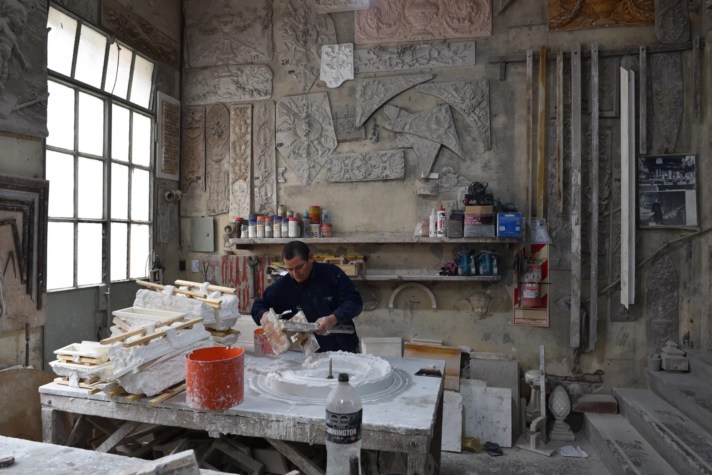
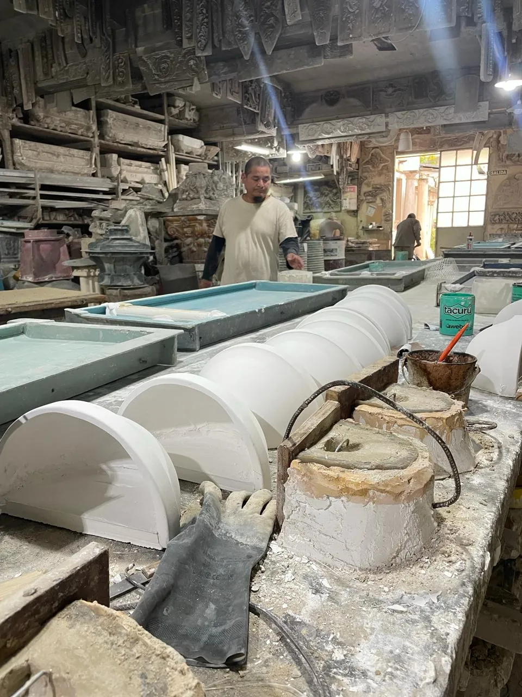
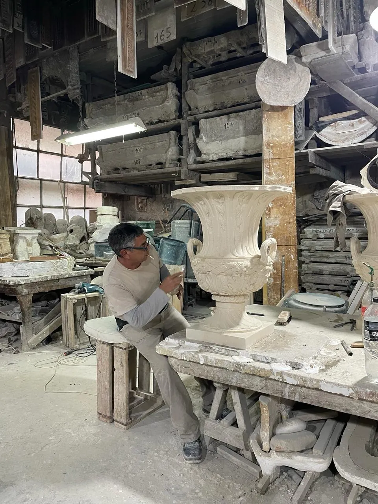
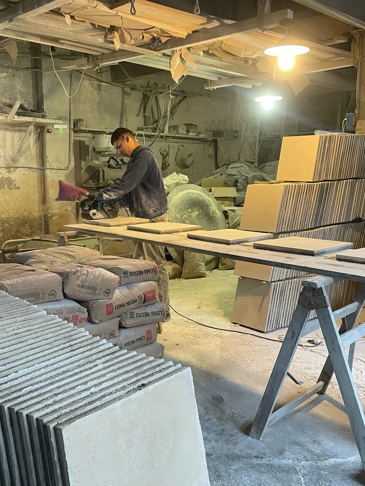

Del molde a la pieza terminada, así se hace cada chimenea, cada busto, cada maceta del catálogo.

Cada relieve nace de un molde propio, tallado y guardado en el taller. Hoy hay más de dos mil, numerados a mano en las estanterías.

Cemento blanco y marmolina se mezclan y se vuelcan en el molde. El curado lleva días antes de poder abrirlo.

Ninguna pieza sale igual a otra. Cada hoja y cada voluta se retoca a mano antes de dejarla secar.

Se corta, se pule y se sella. Recién ahí la pieza está lista para salir del taller de Chacarita.
Ciento tres años del mismo oficio, sin atajos.
— Martineau, desde 1922